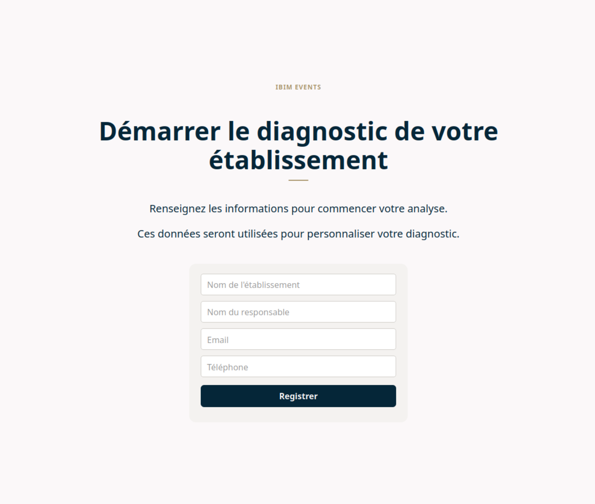

Outil interactif de diagnostic commercial
Stage professionnel · Ubilink, Meylan · avril – juillet 2026

Description
J'ai conçu et développé une application web destinée aux commerciaux d'Ubilink pour structurer leurs rendez-vous clients. L'outil guide le commercial à travers un questionnaire dynamique personnalisé selon le profil du prospect, réalise le recensement technique de ses espaces et génère automatiquement un devis sur mesure.
Ce projet couvre l'ensemble du cycle de développement : analyse des besoins avec l'équipe commerciale, modélisation de la base de données, conception des maquettes Figma, développement frontend et backend, et tests sur scénarios réels.
Informations
- Durée : environ 6 semaines (développement principal dans la 2e moitié du stage)
- Personnes : travail individuel, en collaboration avec le tuteur et l'équipe commerciale
- Type : Projet professionnel
- Contexte : outil nouveau, conçu de zéro à partir d'une réflexion métier existante
Fonctionnalités
- Écran 1 – Création du client : saisie des informations de l'établissement (nom, responsable, email, téléphone) avec création immédiate d'une session de diagnostic.
- Écran 2 – Tableau de bord : vue d'avancement avec trois étapes séquentielles (Analyse des besoins, Recensement, Devis), chaque étape se déverrouillant après validation de la précédente.
-
Écran 3 – Questionnaire général à logique conditionnelle : les questions
s'affichent dynamiquement selon les réponses précédentes (champs
IS_CONDITIONALetTRIGGER_VALUEen base de données). Indicateur de progression permanent. - Écran 4 – Sélection du cas d'usage : que oriente la suite du questionnaire.
- Écran 5 – Recensement des espaces : description de chaque salle, équipements, éléments de mise en scène (éclairage, sonorisation, animations) et configurations d'agencement (Théâtre, Banquet, Cocktail…). Gestion automatique des combinaisons de cloisonnement pour les salles modulables.
- Écran 6 – Devis automatique : calcul côté serveur du montant hors taxe, structuré par postes (pré-production, modélisation 3D, inventaire, configurations, mise en scène, assistant IA, post-production). Résultat enregistré en base pour consultation ultérieure.
- Reprise possible d'un diagnostic interrompu grâce à l'enregistrement continu de la session.
Architecture de la base de données
- ETABLISSEMENTS : table centrale — enregistre la phase courante, le nombre de questions répondues et le statut global de la session.
- QUESTIONS : cœur du questionnaire dynamique, contient toutes les questions avec leur logique conditionnelle.
- SPACES : espaces physiques de l'établissement (salles, halls, terrasses…).
- PARTITIONS : combinaisons de cloisonnement pour les salles modulables, utilisées pour calculer les capacités selon les configurations.
- COST_DETAILS : détail du devis, quantité, prix unitaire et total par poste.
Aspects techniques
- PHP natif avec architecture MVC - séparation logique métier, affichage et données.
- MySQL avec moteur InnoDB - gestion des clés étrangères et de l'intégrité référentielle.
- HTML5, CSS3, JavaScript - interface optimisée pour ordinateur et tablette, utilisable en rendez-vous client.
- Configuration du questionnaire via fichiers JSON - questions modifiables sans toucher au code.
- Calcul du devis entièrement côté serveur pour garantir la confidentialité des barèmes internes.
- Maquettes réalisées sur Figma avant chaque phase de développement.
Difficultés rencontrées
- Évolution régulière du modèle de données au fil des échanges avec l'équipe commerciale - plusieurs réorganisations de tables en cours de développement.
- Gestion du cloisonnement : distinguer les partitions réelles des partitions combinées pour éviter les incohérences lors de l'enregistrement.
- Échanges JavaScript ↔ PHP : différences de types de données nécessitant une attention particulière dans les requêtes et jointures.
- Correction de comportements inattendus dans le module de recensement (création de salle vide, duplication de partitions lors de sauvegardes successives) — fiabilité critique car l'outil est utilisé directement en rendez-vous client.